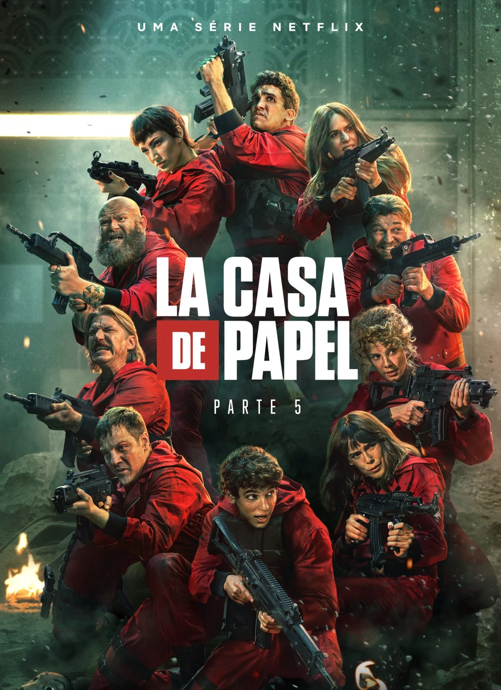
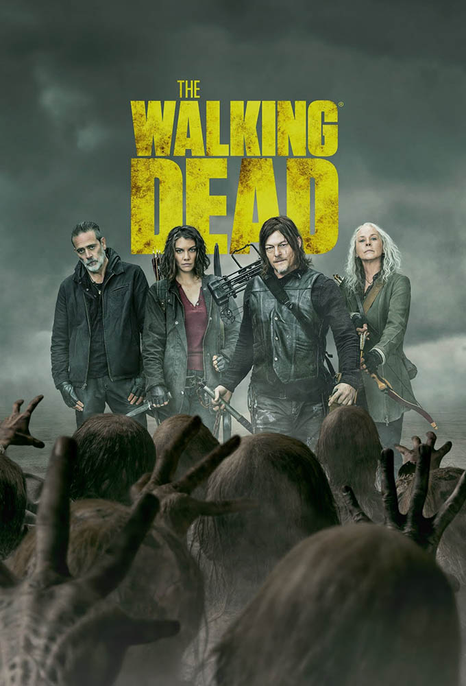
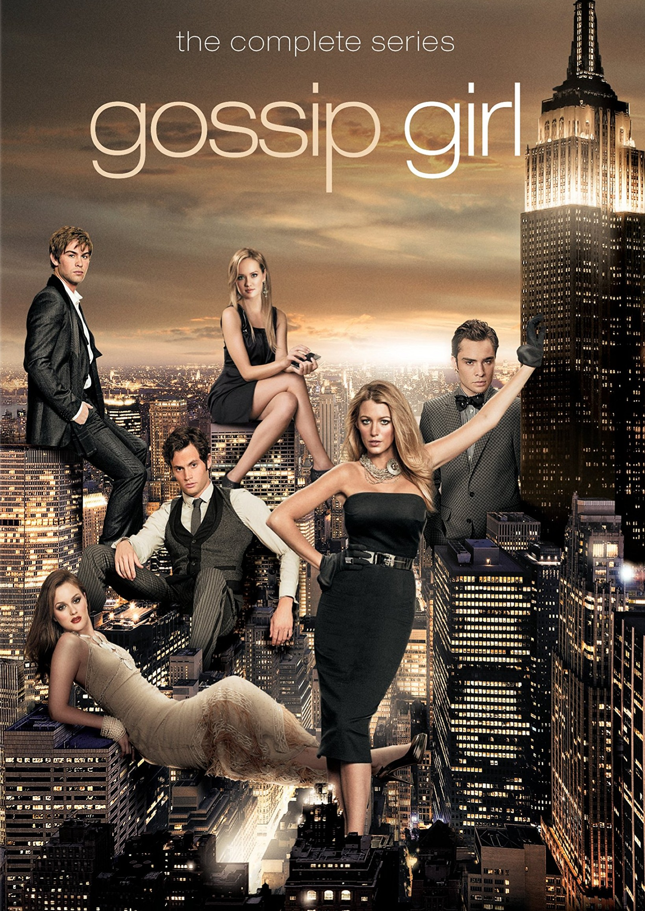
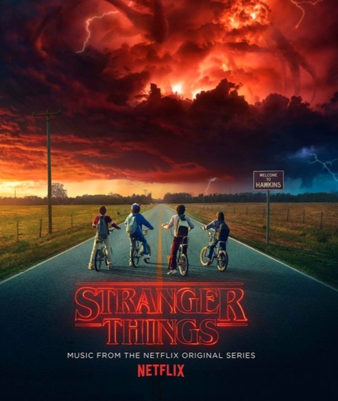

Ação
Explosões, perseguições e adrenalina! Prepare-se para cenas eletrizantes e missões de alto risco com heróis destemidos.
Ver séries
Teen
Entre romances, amizades intensas e dramas da juventude, as séries teen exploram emoções, descobertas e reviravoltas marcantes.
Ver séries
Terror | Suspense
Assombrações, mistérios e tensão. Entre no clima sombrio com histórias assustadoras e reviravoltas de tirar o fôlego.
Ver séries
Drama
Emoções à flor da pele. Séries que mergulham em histórias intensas, relacionamentos complexos e dilemas profundos.
Ver séries
Ficção Científica
Viagens no tempo, universos paralelos e tecnologia futurista. Explore o desconhecido com as melhores séries sci-fi.
Ver séries